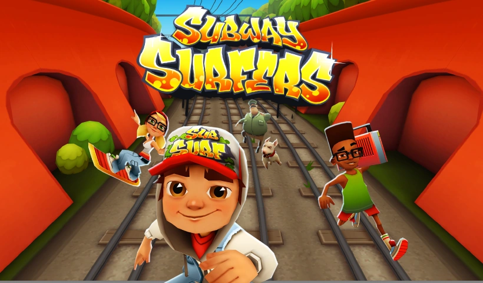
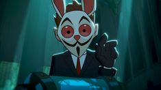
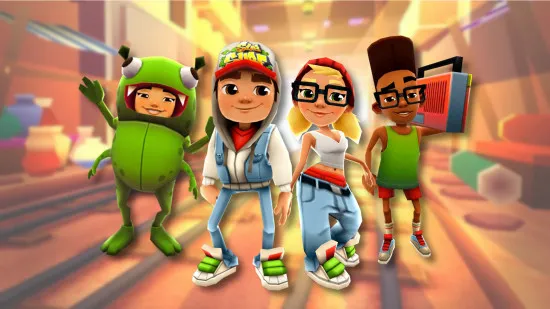
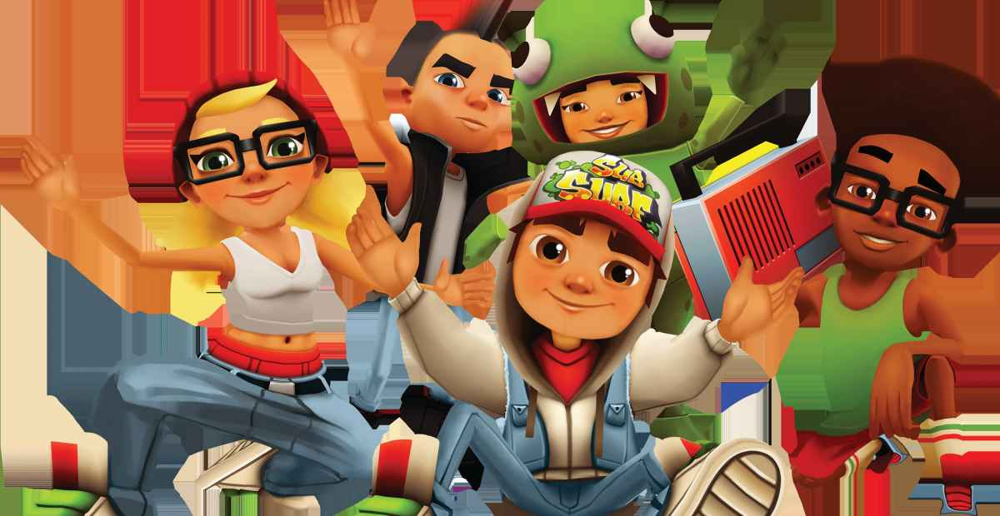
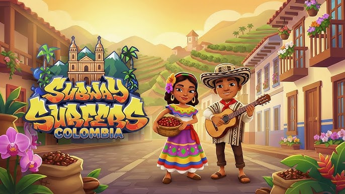
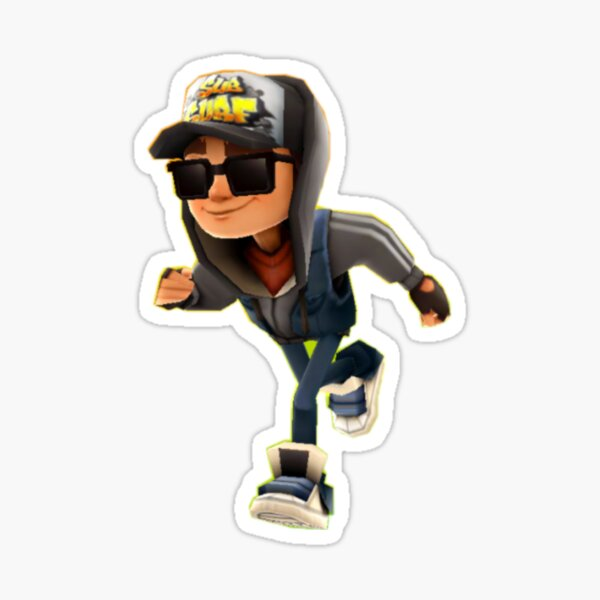

Historia

Su origen
Subway Surfers es un videojuego de plataformas para móviles desarrollado por Kiloo, una empresa privada con sede en Dinamarca y SYBO Games. Está disponible para plataformas Microsoft Windows, Android, iOS, Kindle, y Windows Phone. Los usuarios del juego toman el papel de un adolescente vándalo, quien al ser sorprendido haciendo grafitis en una estación de tren, corren por las vías férreas para poder escapar del inspector y su perro. A medida que el vándalo corre, atrapa monedas de oro suspendidas en el aire mientras al mismo tiempo evita colisionar con los trenes y otros objetos. Las recompensas temporales, tales como la caza estacional, pueden dar lugar a un premio en el juego. Subway Surfers fue estrenado el 24 de mayo de 2012 para iOS y el 20 de septiembre de 2012 para Android, con actualizaciones en temporadas festivas. Desde el 2 de enero de 2013, las actualizaciones se han basado en un "World Tour", que coloca el juego en una nueva ciudad cada dos o cuatro semanas.

Lore
Subway Surfers trata sobre Jake, Tricky y Fresh, jóvenes grafiteros que escapan de un guardia y su perro tras pintar trenes. La trama, expandida en una serie animada, revela que utilizan tecnología antigravedad (patinetas, jetpacks) creada por su amiga Yutani a partir de tubos misteriosos encontrados en las vías, mientras viajan por el mundo eludiendo a agentes secretos.

Teorias
Se cree que Frank no es humano/es el villano: Se teoriza que la máscara de Frank es real y que él no es de nuestra dimensión, atrapado buscando su tren de regreso. Otra versión lo describe como un "muerto manipulado" intentando corregir el tiempo. Tambien Tecnología y Apoyo Ilimitado: El grupo cuenta con dinero y tecnología (hoverboards, jetpacks) infinita, lo que sugiere que son financiados por una entidad poderosa para mantenerlos en movimiento constante. El Infierno/Purgatorio: Una teoría popular en comunidades de fans (no reflejada explícitamente en el resultado de búsqueda pero común) es que el grupo está atrapado en un bucle infinito o en un limbo/purgatorio por sus actos de vandalismo, corriendo para siempre. La verdad sobre las llaves: Las llaves, que permiten salvar al personaje, son vistas como objetos místicos o tecnología avanzada que se encuentra en cajas misteriosas, indicando que el entorno está manipulado
Personajes

Personajes principales
Jake: El protagonista principal, un joven grafitero con una actitud rebelde y aventurera. Es el líder del grupo y siempre está dispuesto a enfrentarse a los desafíos. Tricky: Amigo cercano de Jake, conocido por su estilo único y su habilidad para el parkour. Es un personaje carismático y divertido. Fresh: Otro miembro del grupo, conocido por su estilo de baile y su personalidad relajada. A menudo se le ve con auriculares y es un apasionado de la música. Yutani: Una chica inteligente y creativa que se une al grupo más adelante. Es la inventora detrás de las patinetas antigravedad y otros gadgets que ayudan a los personajes en sus aventuras.

alt="personajestemarios">Personajes Limitados/Temáticos
Estos son personajes que se lanzan durante actualizaciones específicas de ciudades (World Tour) y solo pueden desbloquearse en ese tiempo o mediante eventos especiales.

variaciones de personajes
Además de los personajes principales, Subway Surfers presenta variaciones de personajes temáticos que se lanzan durante eventos especiales o actualizaciones de ciudades. Estas versiones alternativas de los personajes principales suelen tener atuendos y estilos únicos relacionados con la ciudad o el evento en cuestión, lo que añade variedad y atractivo visual al juego.
Trailer del juego
El trailer oficial de Subway Surfers muestra a los personajes principales, Jake, Tricky y Fresh, corriendo por las vías del tren mientras evaden al inspector y su perro. El video destaca la jugabilidad rápida y emocionante del juego, con gráficos coloridos y efectos visuales llamativos. También se pueden ver diferentes escenarios y obstáculos que los jugadores deben superar mientras recogen monedas y power-ups. El trailer transmite la diversión y la adrenalina de jugar Subway Surfers, invitando a los espectadores a unirse a la aventura.